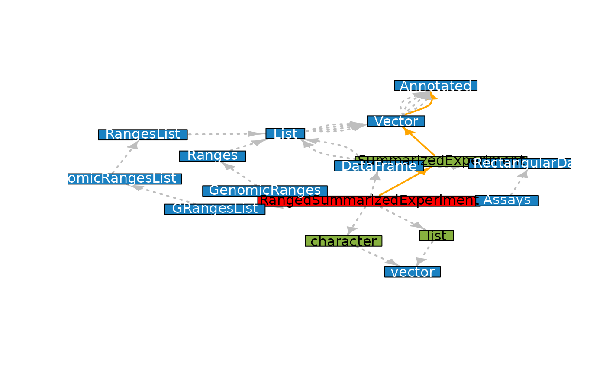

As the title says it should do something with class relationships
buildClassDepGraph(class, includeUnions = FALSE)
buildClassDepData(class, includeUnions = FALSE)
buildClassDepFromPackage(pkg, includeUnions = FALSE)
plotClassDep(class, includeUnions = FALSE)
plotClassDepData(data)
plotClassDepGraph(g)a single character value defining a ‘S4’ class
name
TRUE or FALSE: Should union definitions
included in the result? (default: FALSE)
a single character value defining a package name
a data.frame with compatible columns. See output of
buildClassDepData
an igraph object with compatible edge attributes. See output
of buildClassDepGraph
library("SummarizedExperiment")
#> Loading required package: MatrixGenerics
#> Loading required package: matrixStats
#>
#> Attaching package: ‘matrixStats’
#> The following object is masked from ‘package:dplyr’:
#>
#> count
#>
#> Attaching package: ‘MatrixGenerics’
#> The following objects are masked from ‘package:matrixStats’:
#>
#> colAlls, colAnyNAs, colAnys, colAvgsPerRowSet, colCollapse,
#> colCounts, colCummaxs, colCummins, colCumprods, colCumsums,
#> colDiffs, colIQRDiffs, colIQRs, colLogSumExps, colMadDiffs,
#> colMads, colMaxs, colMeans2, colMedians, colMins, colOrderStats,
#> colProds, colQuantiles, colRanges, colRanks, colSdDiffs, colSds,
#> colSums2, colTabulates, colVarDiffs, colVars, colWeightedMads,
#> colWeightedMeans, colWeightedMedians, colWeightedSds,
#> colWeightedVars, rowAlls, rowAnyNAs, rowAnys, rowAvgsPerColSet,
#> rowCollapse, rowCounts, rowCummaxs, rowCummins, rowCumprods,
#> rowCumsums, rowDiffs, rowIQRDiffs, rowIQRs, rowLogSumExps,
#> rowMadDiffs, rowMads, rowMaxs, rowMeans2, rowMedians, rowMins,
#> rowOrderStats, rowProds, rowQuantiles, rowRanges, rowRanks,
#> rowSdDiffs, rowSds, rowSums2, rowTabulates, rowVarDiffs, rowVars,
#> rowWeightedMads, rowWeightedMeans, rowWeightedMedians,
#> rowWeightedSds, rowWeightedVars
#> Loading required package: GenomicRanges
#> Loading required package: stats4
#> Loading required package: BiocGenerics
#>
#> Attaching package: ‘BiocGenerics’
#> The following objects are masked from ‘package:igraph’:
#>
#> normalize, path, union
#> The following objects are masked from ‘package:dplyr’:
#>
#> combine, intersect, setdiff, union
#> The following objects are masked from ‘package:stats’:
#>
#> IQR, mad, sd, var, xtabs
#> The following objects are masked from ‘package:base’:
#>
#> Filter, Find, Map, Position, Reduce, anyDuplicated, append,
#> as.data.frame, basename, cbind, colnames, dirname, do.call,
#> duplicated, eval, evalq, get, grep, grepl, intersect, is.unsorted,
#> lapply, mapply, match, mget, order, paste, pmax, pmax.int, pmin,
#> pmin.int, rank, rbind, rownames, sapply, setdiff, sort, table,
#> tapply, union, unique, unsplit, which.max, which.min
#> Loading required package: S4Vectors
#>
#> Attaching package: ‘S4Vectors’
#> The following objects are masked from ‘package:dplyr’:
#>
#> first, rename
#> The following objects are masked from ‘package:base’:
#>
#> I, expand.grid, unname
#> Loading required package: IRanges
#>
#> Attaching package: ‘IRanges’
#> The following objects are masked from ‘package:dplyr’:
#>
#> collapse, desc, slice
#> Loading required package: GenomeInfoDb
#> Loading required package: Biobase
#> Welcome to Bioconductor
#>
#> Vignettes contain introductory material; view with
#> 'browseVignettes()'. To cite Bioconductor, see
#> 'citation("Biobase")', and for packages 'citation("pkgname")'.
#>
#> Attaching package: ‘Biobase’
#> The following object is masked from ‘package:MatrixGenerics’:
#>
#> rowMedians
#> The following objects are masked from ‘package:matrixStats’:
#>
#> anyMissing, rowMedians
depData <- buildClassDepData("RangedSummarizedExperiment")
depData
#> parent child type parentVirtual
#> 1 RangedSummarizedExperiment SummarizedExperiment object FALSE
#> 2 SummarizedExperiment RectangularData object FALSE
#> 3 SummarizedExperiment Vector object FALSE
#> 4 Vector Annotated object TRUE
#> 6 RangedSummarizedExperiment DataFrame slot FALSE
#> 7 RangedSummarizedExperiment list slot FALSE
#> 8 RangedSummarizedExperiment GenomicRanges slot FALSE
#> 9 RangedSummarizedExperiment GRangesList slot FALSE
#> 10 RangedSummarizedExperiment Assays slot FALSE
#> 11 RangedSummarizedExperiment character slot FALSE
#> 12 DataFrame RectangularData slot TRUE
#> 13 DataFrame List slot TRUE
#> 15 List Vector slot TRUE
#> 17 Vector Annotated slot TRUE
#> 19 DataFrame RectangularData slot TRUE
#> 20 DataFrame List slot TRUE
#> 22 List Vector slot TRUE
#> 24 Vector Annotated slot TRUE
#> 26 list vector slot FALSE
#> 31 GenomicRanges Ranges slot TRUE
#> 35 Ranges List slot TRUE
#> 36 List Vector slot TRUE
#> 38 Vector Annotated slot TRUE
#> 40 GRangesList GenomicRangesList slot TRUE
#> 42 GenomicRangesList RangesList slot TRUE
#> 44 RangesList List slot TRUE
#> 45 List Vector slot TRUE
#> 47 Vector Annotated slot TRUE
#> 49 Assays RectangularData slot TRUE
#> 51 character vector slot FALSE
#> parentUnion childVirtual childUnion
#> 1 FALSE FALSE FALSE
#> 2 FALSE TRUE FALSE
#> 3 FALSE TRUE FALSE
#> 4 FALSE TRUE FALSE
#> 6 FALSE TRUE FALSE
#> 7 FALSE FALSE FALSE
#> 8 FALSE TRUE FALSE
#> 9 FALSE TRUE FALSE
#> 10 FALSE TRUE FALSE
#> 11 FALSE FALSE FALSE
#> 12 FALSE TRUE FALSE
#> 13 FALSE TRUE FALSE
#> 15 FALSE TRUE FALSE
#> 17 FALSE TRUE FALSE
#> 19 FALSE TRUE FALSE
#> 20 FALSE TRUE FALSE
#> 22 FALSE TRUE FALSE
#> 24 FALSE TRUE FALSE
#> 26 FALSE TRUE FALSE
#> 31 FALSE TRUE FALSE
#> 35 FALSE TRUE FALSE
#> 36 FALSE TRUE FALSE
#> 38 FALSE TRUE FALSE
#> 40 FALSE TRUE FALSE
#> 42 FALSE TRUE FALSE
#> 44 FALSE TRUE FALSE
#> 45 FALSE TRUE FALSE
#> 47 FALSE TRUE FALSE
#> 49 FALSE TRUE FALSE
#> 51 FALSE TRUE FALSE
g <- buildClassDepGraph("RangedSummarizedExperiment")
plotClassDepGraph(g)
